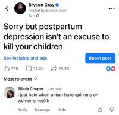

0
0
A class action filed this week accused Amazon's Twitch gaming service of using video streams to fuel its AI products without licensing or obtaining permission, reports Engadget:
Earlier this month, Twitch Support posted on X that it added an option to opt out of "having your channel content used to train generative AI content models across Amazon." Shortly after, Twitch hosted an episode of its recurring Patch Notes stream where Mike Minton, the company's chief product officer, said "if it was opt-in, nobody would opt in," when asked by a viewer why the Twitch settings for AI training aren't opt-in but instead enabled by default, requiring users to opt out if they don't want to participate.
Now, the latest class action lawsuit claims that Twitch and Amazon committed a breach of contract when the companies decided to use its streamers as "free training stock for separate commercial AI products."
Read more of this story at Slashdot.
"Iran shut down a British power plant for four days in an unprecedented cyber attack," reports the Telegraph.
More details from the BBC:
The government said that at no point was there a risk to the UK's energy system, but the Department for Energy Security and Net Zero (DESNZ) has contacted power companies to advise them about the risk of cyber attacks... DESNZ said the incident had affected a small-scale generator and at no point had there been a risk to the wider energy system. The UK's power network has a number of smaller gas generators which provide short-term power when needed.
Thanks to Alain Williams (Slashdot reader #2,972) for sharing the news.
Read more of this story at Slashdot.
"There is still no sign of economy-wide job destruction," says economist Erik Brynjolfsson. Working with researchers at the Stanford Digital Economy Lab, Brynjolfsson has determined an AI "job apocalypse" is unlikely, reports the Washington Post, "even though it will likely impact entry-level jobs."
And Brynjolfsson "predicts that demand for experienced workers such as senior coders will still be high even if AI takes on more routine knowledge and coding work in the future."
Earlier this month, Brynjolfsson and his colleagues at the Stanford Digital Economy Lab updated their widely publicized report, "Canaries in the Coal Mine? Six Facts about the Recent Employment Effects of Artificial Intelligence," to reflect that they do not see widespread, economy-wide job displacement associated with AI...
Brynjolfsson: What has moved on the upside is productivity. Nonfarm business productivity growth is running over 2 percent, the best sustained stretch since the late-1990s boom... The gains show up years after the investment, and they're starting to show up... By 2030, we will have enormously more capable AI, meaningfully faster productivity growth and an unemployment rate that looks unremarkable — somewhere in its historical range. That surprises people, but it's what the mechanism implies... [T]he technology is becoming much more powerful, and it's going to be even more powerful.
Secondly, there are huge implications for business and the economy, including some increases in living standards, but also, potentially, job disruption. And then, thirdly, we must act now to address this gap. We can't just sit back and wait for the tsunami to hit us. And one of the things we can do is put in place institutions, policies and research to make the technology more complementary — using AI to complement people so it creates more jobs. A common misconception among business managers is AI, in order to be effective, has to reduce jobs. That's just not true. You can use AI to increase employment and productivity at the same time. It's kind of a win-win...
Right now, tax policy is very skewed toward favoring capital versus labor — and, as a consequence, a lot of entrepreneurs and managers, they're basically being guided by the federal government to replace workers with machines. And I don't think that's necessarily what we'd like to have happen. From an economist's perspective, what you want to be doing is not mimicking and replacing things. You want to be extending and complementing — have humans do new things they never could have done before.
He acknowledges "real, persistent and widening" effects on entry-level jobs, with a labor market "closing the on-ramp for people starting their careers... If companies don't hire people at the base of the pyramid, then they're not going to have those people later when they need them."
One he points out that one company is instead using AI to speed up its training of young employees.
Read more of this story at Slashdot.
Falling prices have made grid-scale storage batteries more attractive, reports Bloomberg. But after decades of stagnant investment, America's grids "are racing to make the upgrades needed to plug them in," with supplies straining for the necessary equipment.
Demand for batteries has skyrocketed as electricity use across the U.S. swells, driven by data centers' booming energy needs and increasing electrification. It's also getting harder to get them connected to power grids... As those upgrades get delayed, storage projects are piling up in interconnection queues from coast to coast. For example, Consolidated Edison Inc., a major utility in New York state, says over the last two years the volume of battery storage projects waiting to be connected has grown by 300%... "The whole process of interconnecting these new power plants got really log-jammed and bottlenecked," said Joseph Rand, an energy policy researcher at the Lawrence Berkeley National Laboratory...
Nationwide, some 750 gigawatts of energy storage projects — roughly equivalent to the generating capacity of more than 700 nuclear reactors — are in line to get grid connections, according to the lab's research. Not all of these projects will get built. Many developers already abandoned the queue because of delays. Still, the waiting time is increasing; the median was five years in 2025, up from a year and a half in 2015. The flood of battery projects is expected to continue. Wood Mackenzie, an energy consultancy, projects the U.S. energy storage market will quadruple in the next six years...
[Shortages in key equipment] have driven up construction costs and time lines for grid upgrades, leaving utilities struggling to build fast enough. A drought of skilled workers is further slowing them down... In California, PG&E Corp., the state's largest utility, told regulators in January that a key driver of delays was long lead times for specialized equipment. Procuring certain breakers could take nearly four years, according to the utility, which reported a 300% increase in its interconnection workload compared to prior years. In Northern California, for example, holdups to circuit breaker upgrades to a substation in Solano County led to projected delays for two battery projects worth a combined 450 megawatts. Transmission line work in the Bay Area has put another 800 megawatts of energy storage at risk of delay, according to PG&E.
Last year New York's Con Ed started requiring developers to help pay for upgrades if their projects will push power demand and strain infrastructure. But that also drew criticism:
According to a survey conducted by the trade group New York Battery and Energy Storage Technology Consortium (NY-BEST), the new methodology raised costs by an average of $21 million per project, a 14-fold increase. At least 25 projects have been canceled as a result, according to the group. Battery advocates have appealed to state regulators to get Con Ed to abandon the new policy.
Thanks to Slashdot reader Bruce66423 for sharing the news.
Read more of this story at Slashdot.
Retraction Watch reports:
A trial date has been set in a $1 billion defamation case against Elsevier that alleges the company published what plaintiffs say was a manipulated study about an air purifying technology over objections from peer reviewers. The case has already cost Elsevier a $10,000 sanction from a judge.
Global Plasma Solutions (GPS), which makes air quality products, sued Elsevier in 2022 after the publisher declined to retract a 2021 paper in Building and Environment about GPS' needlepoint bipolar ionization technology, which it heavily marketed during the COVID-19 pandemic as an air purifier. The complaint claims Elsevier is responsible for the authors' alleged omission of data and misleading conclusions in the paper that fueled "massive" financial losses for the company, its lawyers claim. Elsevier knew the paper "failed peer review" under its "own standards," but moved forward with the article despite this knowledge, according to GPS, which now goes by GPS Air.
The complaint has survived a bid by Elsevier to dismiss the case, and a trial has been set for Dec. 7. In allowing the case to proceed, U.S. Magistrate Judge David Keesler said in a May 2024 opinion that GPS has "plausibly alleged actual malice" by Elsevier defined as "knowledge of falsity or reckless disregard for the truth." Chief Judge Martin Reidinger of the U.S. District Court for the Western District of North Carolina upheld Keesler's recommendation in July 2025...
Citing internal and discovery documents, GPS alleges an assessment of 19 journals revealed Elsevier has published more than 1,200 articles either without any peer review, or against the recommendations of the reviewers.
Thanks to long-time Slashdot reader sandbagger for sharing the article.
Read more of this story at Slashdot.
BleepingComputer reports:
Microsoft says ongoing issues causing games to crash or fail to launch after installing the August 2026 Windows updates may be caused by peripherals with RGB lighting.
As Microsoft explained when it confirmed it's investigating on Wednesday, this known issue affects games like ARC Raiders, MARVEL Tokon: Fighting Souls, and The Finals on systems running Windows 11 24H2 and 25H2... "[Peripherals or internal device components with RGB lighting features] may install drivers or code components with file names similar to inpoutx64. In systems where these drivers are found, the issue is then triggered by launching certain games," it noted.
Thanks to Slashdot reader joshuark for sharing the article.
Read more of this story at Slashdot.
"AI went from being very terrible to seemingly genuinely quite good at a professional level in a very short space of time..." says the Verge's AI reporter.
But AI systems "are still truly, truly terrible at some areas of math... even the days of the week."
If you look at academic math papers, a lot of the time you won't see numbers... So they're still terrible, but they're now also very good at this other part. As to why, at some point you reach a critical mass of what these systems can do. We saw it with writing, we've seen it with programming. They're very good at forging connections between different areas, applying old methods in new ways, those kinds of things. It appears that the newer models they're training have apparently reached that level where it clicks, and now it can do math...
There are areas now where it seems to be producing work that is on par with good mathematicians, alongside other parts where yeah, it can't count. All caught up in that is whether it's going to rewrite employment structures or funding structures... One would hope [math researchers] would branch out into all of these new exciting areas or pose new questions. But AI won't do that, and that's the concern. And then that would leave the field quite sterile, and it will have all of these things that have been done, and maybe nothing left to pursue... [A] lot are scared that it's closing off the field. So by definition, those breakthroughs that lead to something surprising and new that you can say, "Oh, this works here," may not be happening anymore...
There were some bleak responses from graduate students I saw in essays posted online. Where's their place in this as future researchers? Do they have a place in this? Is it as glorified AI proof checkers? That will be quite an unsatisfying career, I imagine. Or maybe not, I don't know. We will see. I think anything used properly will be a net boon.
They also had an interesting response when asked if AI democratizes access to high-level mathematical proofs:
A lot of the mathematicians I spoke to were almost quite weary of this, actually. They love the idea, in theory, of democratizing access. They're also quite fed up with AI-generated or -assisted papers that are flooding every publication imaginable, as well as the pre-print servers that they use in these fields. Some of those I spoke to said things like, "Oh, I got three emails this week alone with people being like, 'Hey, is this legit?'" Because they thought they'd solved something with ChatGPT or with Claude, and they also don't have the mathematical skills to check whether they've actually solved something.
On the flip side, there are parts where they said, "Well, we've got a talented undergrad who's done something that a talented undergrad would probably have never managed, and here they are doing grad-level work and they've produced a paper that is legit." And in the bigger scheme of things, a few I spoke to said, "Well yeah, a lot of these are in the ivory tower. Having access to this kind of thing globally could really boost access to the kind of things here." On the flip side, the cost. These things cost a lot to run.
Read more of this story at Slashdot.
It's "radically different from other quantum computers" reports Phys.org. The Helios system uses trapped ions — charged atoms suspended in free space using electromagnetic fields.
But it operates with 98 qubits — making it the largest trapped-ion quantum computer built so far.
Quantinuum, the company behind the device, is based in Cambridge, U.K., and Broomfield, Colorado. It demonstrated earlier machines operating on 32 qubits in 2023 and 56 qubits in 2025...
It relies on two major advances — one in hardware and one in software. First, the four-way X junction lets the system handle several tasks at once rather than one at a time, which is much faster. That was impossible in earlier QCCD [quantum charge-coupled device] machines, which could only move data back and forth in a single line or loop. Second, judicious use of the freedom offered by the two dimensions of the X junction relies on new classical control software called Helios runtime, which plans the smartest, fastest route for moving and processing the data. Together, these represent a substantial advance in the engineering of quantum computers.
An important consequence is that Helios can perform computations that cannot be performed even on the largest supercomputers using known methods within reasonable amounts of time and power consumption. This demonstrates the ability of this device and its successors to surpass the computational prowess of classical computers — although their algorithms and hardware are rapidly advancing, too. Having said that, Helios' computations have just been random benchmark tests, so the practical importance of this leap forward is still limited. To perform quantum computations of practical importance in science and commerce, even the most optimistic estimates suggest that quantum computers must be enormously bigger and better — of the order of a million qubits.
Read more of this story at Slashdot.
This week OpenAI launched a version of ChatGPT exclusively designed for teenagers between the ages of 13 and 17, reports CTV, "saying this version came with stronger protections around content related to mentions of suicide, self-harm and romantic or sexual chats."
[Tech analyst Carmi Levy says] "What it's doing is it's using cues, it's sort of watching how you're using the tool, and it's trying to guess your age." Levy said if ChatGPT thinks a person has lied about their age when they first signed up, it will automatically put them into the Teens mode for protection. "It includes those sort of two things: prevent you from having experiences that are age inappropriate, and also add features that are aligned with academics, so that makes it easier to study, makes it less likely for you to cheat on an assignment, provide resources that that that allow you to learn more effectively," he said.
Levy reminded users that this is still an application and a web service, which means it's constantly collecting personal information about the users' activities on the device and using the data to estimate their age... In the event a user is talking about self-harm, this new version will block the conversation and suggest additional help or call emergency or mental health services, Levy explained. It would do the same with violent content, eating disorders, engaging in dangerous activities, as well as explicit, sexual or graphic content. "It's using AI again to sort of parse out that conversation: 'are we headed in a in a significant direction? If so, throw up that guardrail, stop it from happening, redirect.'"
However, the tech analyst said a number of people who have attempted to bypass the guiderails for research have succeeded in doing so "with a little bit of prompting.... I wouldn't call it 100% safe. That's kind of the catch-22 of the entire AI industry." This will lead parents to think that their children are safer and reduce the oversight on their online activities, which Levy described as a "perverse impact" that is "problematic."
"Parents should not assume that OpenAI has their kids' best interests at heart. They should also not assume that these technologies are perfect. They will miss certain things, and they will also engage in what we call false positives," he said. "An adult who's legitimately is in the platform might be tagged as a child because the AI simply got it wrong."
OpenAI's blog post says the new mode was designed for "preserving the ability to learn, create, and explore."
But CNN notes the move "comes as OpenAI faces a string of lawsuits alleging that inappropriate conversations with ChatGPT contributed to the harm or deaths of young people."
[New tools] include nudges for teen users to take a break if they've been active for 90 minutes within a three-hour window. OpenAI is also adding options for teens or parents to set "Quiet Hours" when ChatGPT is unavailable or "Study Hours" where ChatGPT's study mode for learning will be on by default. The company also said it has improved protections to prevent ChatGPT from expressing personal feelings toward a user. And it's adding reminders that caution teens to think twice if they try to upload a private or sensitive image to the chatbot...
Nearly a third of American teens use AI chatbots daily, a Pew Research Center study published in December found. ChatGPT was by far the most popular AI chatbot in the survey, with more than half of those teens reporting having used it.
Engadget shared this observation from Josh Golin, the executive director of Fairplay, a non-profit advocating for policies to make the internet safer for children. "Most parents, overwhelmingly, do not avail themselves of [parental oversight] tools, in part because they are deliberately made hard to find and use." Golin's group wanted to see testing of the tools first to see whether they led to better outcomes for teenagers. "The way this was just announced feels more like a response aimed at public relations than actual deep thinking about what kind of support [teens] need."
And Mashable got a similar quote from Robbie Torney, head of AI/digital assessments for Common Sense Media's Youth AI Safety Institute. OpenAI's teen experience makes important safety commitments, but "What we really need now is evidence that they work, and we need this evidence, including our testing and the testing of others, before anyone, including parents, puts real trust in ChatGPT for Teens."
Importantly, Torney said parents shouldn't assume their child is using ChatGPT for Teens. While OpenAI uses age estimation to place users in the age-appropriate version of ChatGPT, it can still mistake a user as older. Parents can be sure their child is using the teen version by linking their ChatGPT account to their child's and implementing OpenAI's parental control features. If a teen has previously lied about their age — and plenty do — they may continue to access the adult version of ChatGPT...
Torney said caregivers must enact parental controls to receive notifications from OpenAI should their teen discuss suicide, self-harm, or acts of violence in immediate or dangerous ways... An OpenAI spokesperson said every notification is reviewed by a trained human before it's sent. The company strives to review notifications in under one hour.
Read more of this story at Slashdot.
Slovakia acquired speed cameras to modernize its traffic control-- but there was a surprise. Tom's Hardware cites this story from the Risky Bulletin Newsletter:
Unfortunately, the country's national security service, the NBU, has discovered that the cameras have multiple security issues. Firstly, they have SMS-activated Russian backdoors. Secondly, live camera feeds can be accessed by anyone with the device IP, no password necessary...
[The cameras] are thought to be rebranded Russian CORDON PRO.M traffic cameras, produced by a St. Petersburg-based firm called Semicon... reportedly bought via a Cyprus-based shell company with fake certifications. Reports also suggest that pressure from the opposition political party in Slovakia led to the NBU investigations... Probably most seriously, in terms of national security, these cameras contain a hardcoded list of Russian phone numbers, which can be used to open a backdoor. An SMS from one of these numbers can open shell and network access... [T]he SecureBoot feature is ineffective, and the web management portal can be accessed, exposing live streams, by anyone with the camera IP.
Cameras that have been installed and set up have since been deactivated by the Slovak Ministry of the Interior. Meanwhile, for due diligence, an independent auditor will be called in to confirm the NBU's findings. It is thought that Croatia, and some other countries in Eastern Europe, may have undiscovered issues with traffic control cameras of similar origin.
Read more of this story at Slashdot.
"It began life just a year after SimCity 4's 2003 launch," writes the blog PCGamesN. "Now, over 20 years later, it's still going strong with the arrival of Network Addon Mod update 50."
The SimCity 4 Network Addon Mod, or simply 'NAM' among the community, has long been a de facto recommendation to anyone looking to pick up the classic city builder. It's a comprehensive overhaul to the game's transportation and infrastructure networks that combines key fixes with a vast set of additional build pieces such as overpasses, intersections, on-ramps, roundabouts, and so on.... [Y]ou'll be able to place down elements adjacent to one another that might previously have needed a one-tile gap between them. Streets can be dragged diagonally, slope tolerances have been improved, and you can build tunnels with the street network.
The new version also includes a fix for the 'Eternal Commuter Loop' bug, which might sound fairly innocuous if you're not deep in the weeds. In actuality, it's a 23-year-long frustration that has plagued modders ever since launch. Essentially, it's a problem with the regional pathfinding across city boundaries in certain layouts, causing your Sims to bounce from location to location in search of work without actually taking up a job in any of them. Your zone demand is ruined, traffic builds to unsustainable levels, and the economy falls to pieces before your very eyes. Until now, the only real solution was to simply avoid building layouts that gave your commuters the chance to loop between locations. Now, by blocking specific neighbor-to-neighbor routes while allowing the rest to run as normal, the problem has been resolved...
Equally impressively, the mandatory implementation of the DLL has reduced the size of the NAM codebase "by almost 90% and by more than ten million lines, making it easier to maintain and reducing the chance of bugs."
Thanks to long-time Slashdot reader Striek for sharing the news.
Read more of this story at Slashdot.
Debian developers are voting on whether to ban AI-assisted contributions, reports the blog Linuxiac, with a ballot listing eight proposals and a "None of the above" option.
The first one is still the original proposal to ban LLM-assisted contributions by changing the Debian Social Contract. This would stop generative AI from being used for direct Debian work like packaging, software, documentation, translations, websites, and project communication. However, upstream projects made with AI help would not be affected. The proposal gives several reasons for the ban, such as unclear copyright and licensing, doubts about the reliability of AI-generated work, extra review work for maintainers, aggressive scraping of Free Software resources, and the high resource use of large AI systems...
The second option would clearly allow contributions that are partly or fully made by an LLM, as long as contributors check their technical quality, security, licensing, and usefulness, fully understand the changes, and disclose major AI help. It would also ban sending private or sensitive Debian information to untrusted external AI services. A similar fourth option recognizes worries about generative AI but says banning it would be hard to enforce and not helpful. This proposal would accept AI-assisted Debian work if it follows the Debian Free Software Guidelines, is properly reviewed and understood by the contributor, and is marked as AI-assisted when needed. The fifth proposal is even more open. It says Debian should not support or ban generative AI tools, but should apply the same standards for quality, correctness, maintainability, and legality to all contributions, no matter how they were made...
One unique proposal is called "Debian is created by humans." Instead of banning AI tools for contributors, it focuses on what actually gets included in Debian. With this approach, contributors could use generative AI for research, analysis, exploration, or critique, but could not submit AI-generated output directly as Debian packaging, patches, documentation, bug reports, project communications, or other Debian work. As the proposal says: humans create Debian. Another, much stricter proposal asks Debian contributors to avoid LLM use as much as possible. It would require all Debian communication, like bug reports, mailing-list messages, Salsa discussions, and Planet Debian posts, to be written only by humans. Any AI use in Debian work would have to be disclosed, and violations could be handled under the project's Code of Conduct.
The CEO/founder of AI-native compliance management platform company Strike Graph believes a Debian AI ban is "the wrong fix for the actual problem" at hand, reports The New Stack:
"Debian's ban isn't really about banning AI," [CEO Justin] Beals says. "It's an admission that nobody has built a reliable way to verify what an AI agent actually produced before it lands in a codebase this many systems depend on, including infrastructure running in orbit. That's a legitimate thing to be worried about...." He thinks that any policy statement that says AI isn't allowed simply won't hold up, as the tooling keeps getting harder to detect...
Looking across the complete set of tabled propositions, proposal A (no LLM contributions to Debian via social contract) needs a 3:1 majority to pass; the other seven proposals (B to H) need a simple majority.
Read more of this story at Slashdot.
Wrongly discarded lithium batteries, such as those in vapes, are causing more than 10 fires a week at U.K. recycling centers, according to figures shared with the Guardian:
The Environment Services Association (ESA), the trade body for waste management companies, said its members had reported 1,518 fires in the year to March 2026. At least 541 of these fires were directly attributed to lithium ion batteries, the survey found. There were a further 216 battery fires in bin lorries [garbage trucks]. The ESA said the reported number of battery-related fires underestimated the scale of the problem, because in most incidents it was impossible to determine the cause of the blaze. A spokesperson said: "We know 40% of fires at recycling centres are caused by batteries, but we think the actual number is more like 70%."
It estimates that annual cost of these fires has increased from £150m in 2021 to £1bn today...
The ESA is calling for a £5 deposit scheme on the sale of all vapes to ensure that vape users have an incentive to return used devices to retailers for safe disposal... [Patrick Brighty, the head of recycling policy at the ESA, said] "Vapes are among the biggest culprits because they're cheap, abundant and typically have a short use-life."
Thanks to long-time Slashdot reader AmiMoJo for sharing the news.
Read more of this story at Slashdot.
An anonymous reader shared this report from the blog It's FOSS:
Canonical has committed funding to a three-year PhD project focused on building a system that can automatically translate large C codebases into Rust. And they are not alone; UK Research and Innovation is matching their funding for the project, which is set to run through the University of Bristol's Programming Languages Research Group.
The PhD is aiming to build an all-encompassing platform that can take a C repository running into hundreds of thousands of lines and translate it into Rust that's "safe, behaviourally correct and maintainable Rust."
The work will be carried out by a student, Alex Wood, who will be supported by Professor Meng Wang leading the work, with Dr. Cristina David and Canonical's Jon Seager serving as co-supervisors.
Read more of this story at Slashdot.
Remember that rush rescue mission for NASA's $500M space telescope? It failed, reports CNN, and the LINK satellite won't be able to boost the telescope's orbit. NASA says its decades-old Swift telescope will now continue losing altitude, until it reaches Earth's atmosphere later this year and burns up.
CNN reports:
Just weeks after LINK lifted off on July 3, it started to spin out of control. [Satellite designer] Katalyst was able to regain control of the satellite, but the company acknowledged that the issue cost it time, which would delay LINK's rendezvous with Swift by about a month. However, that postponement — at least initially — did not seem to be a deterrent to the mission. Now, NASA and Katalyst have announced that LINK's mission will not capture and boost Swift to a higher orbit "due to ongoing attitude control issues," according to statements Wednesday.
"NASA should be willing to move quickly and take smart risks when the potential return is worth it, and that is exactly what we did with this mission," NASA Administrator Jared Isaacman said in a statement. "This is not the outcome we were working toward, but it does not change why this mission was worth attempting. The team moved with extraordinary speed to give Swift a chance to carry out more science while advancing capabilities America will need for satellite servicing in the future...."
The mission team is forging ahead with its plan for LINK to rendezvous with Swift — but as a demonstration rather than a rescue. "We are going to learn everything we can from LINK's rendezvous attempt and put those lessons to work on the missions that follow," Isaacman said... Swift wasn't designed to be serviced in space, which means that insights from the demonstration could be used for future missions... "We have already learned a tremendous amount," [said Ghonhee Lee, CEO of Katalyst Space Technologies], "and now our job is to turn those lessons into something durable — building a repeatable playbook to inform future rendezvous and proximity operations and satellite servicing."
Read more of this story at Slashdot.
Rebecca Falconer / Axios : Trump says communities that oppose data centers are “making a mistake” as they create “tremendous amounts of jobs and money”, amid bipartisan backlash — President Trump defended the expansion of data centers in an interview with his former fixer, Michael Cohen, that aired in full on Sunday.
Julia Fioretti / Bloomberg : Filing: Shein will debut on the Hong Kong exchange on Sept. 1, seeking up to $1.8B in its IPO with Goldman Sachs, Morgan Stanley, and JPMorgan as joint sponsors — Shein Global Holdings Ltd. is seeking to raise as much as $13.9 billion ($1.8 billion) in its Hong Kong initial public offering …
Truman Dickerson / Business Insider : Sam Altman says AI could end up controlled by a few powerful players, partly because AI fears could push people to trade “a lot of liberty for safety” — OpenAI CEO Sam Altman says he worries that AI will one day be controlled by a handful of companies, models, or people …
Axios : Greg Abbott says data center companies “dug their own grave” by moving into communities without first gaining support, signaling growing Republican backlash — Texas Gov. Greg Abbott delivered one of the starkest warnings yet from a Republican to the AI industry …
Katie Roof / Business Insider : Sources: Hugging Face is exploring a sale that could value it at $13B+, up from $4.5B in 2023, and has been working with a bank to evaluate bidders' interest — The AI industry's next blockbuster acquisition may not be another model maker. — Hugging Face, whose platform helps developers discover …
George Hammond / Financial Times : Ramp data: Fable 5, launched in June, has plateaued at ~11% of spending on Anthropic tools, as companies shift to cheaper models; Opus 5 surpassed Fable 5 — AI lab's Fable 5 has met with sluggish demand from corporate clients — Anthropic's US customers are using cheaper alternatives …
Reuters : Alibaba plans to raise ~$10B in a follow-on share offering to fund AI investments; sources: it plans to offer 710M shares at a 3.6% discount to Friday's close — China's Alibaba (9988.HK) on Sunday launched a HK$80-billion ($10.2 billion) share placement to fund artificial intelligence-related development.
Mark Gurman / Bloomberg : Sources: foldable iPhone feels durable, fits well in a pocket, has useful iPad-like app layouts, excels as a camera viewfinder but lacks telephoto and Face ID — Also: Get ready for iPhone price hikes. — Apple is about to bring some of its product magic back with its first foldable iPhone.
Raffaele Huang / Wall Street Journal : The careers of Z.ai's Tang Jie and Moonshot AI's Yang Zhilin, once teacher and pupil at Tsinghua University, show that China's AI leap is no sudden development — University lab nurtured the computer scientists who are using ingenuity and imitation to chase down Anthropic and OpenAI; ‘they know perfectly how to monetize their work’
Jeffrey Kopp / CNBC : A profile of Judge Yvonne Gonzalez Rogers, who is presiding over US state AGs' social media addiction lawsuit against Meta and oversaw the Musk v. Altman trial — It's been a crazy four months for Yvonne Gonzalez Rogers. — The judge in the Northern District of California spent late April …
Financial Times : The popularity of risky leveraged chip ETFs in South Korea prompted regulators to cap individual exposure and mandate a weeklong investor education course — Leveraged single-stock ETFs attracted billions of dollars of net inflows even as they plunged during market sell-off
Jagmeet Singh / TechCrunch : Sources: Flipkart Minutes, the quick commerce service of Walmart's Flipkart, is now delivering 1.1M-1.2M orders per day, up from ~390K-400K in November 2025 — Indian startups spent years getting consumers accustomed to having groceries and everyday goods delivered within minutes.
Financial Times : Semiconductor cram schools are flourishing in Seoul as applications to Samsung and SK Hynix surge, fuelled by record earnings and eye-catching worker bonuses — Private tutors teach semiconductor basics and help polish CVs for hopefuls looking to join lucrative sector
Robbie Whelan / Wall Street Journal : Sources: Nvidia plans to use its $6B deal with Poolside to build an open-weight AI model to compete with Chinese models like DeepSeek and Kimi — A sweeping agreement with startup Poolside aims to build an open AI ecosystem in the U.S. to compete with Chinese heavyweights and American AI giants
Telegraph : Sources: Iran-linked hackers shut down a small UK power plant for four days, coinciding with a wave of Iran-affiliated attacks on US water utilities — Unprecedented cyber attack believed to be most successful of its kind — Tony Diver , Political Editor. Rozina Sabur , National Security Editor.